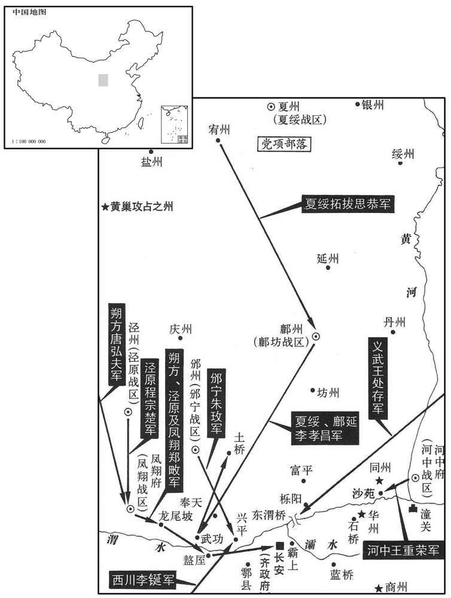
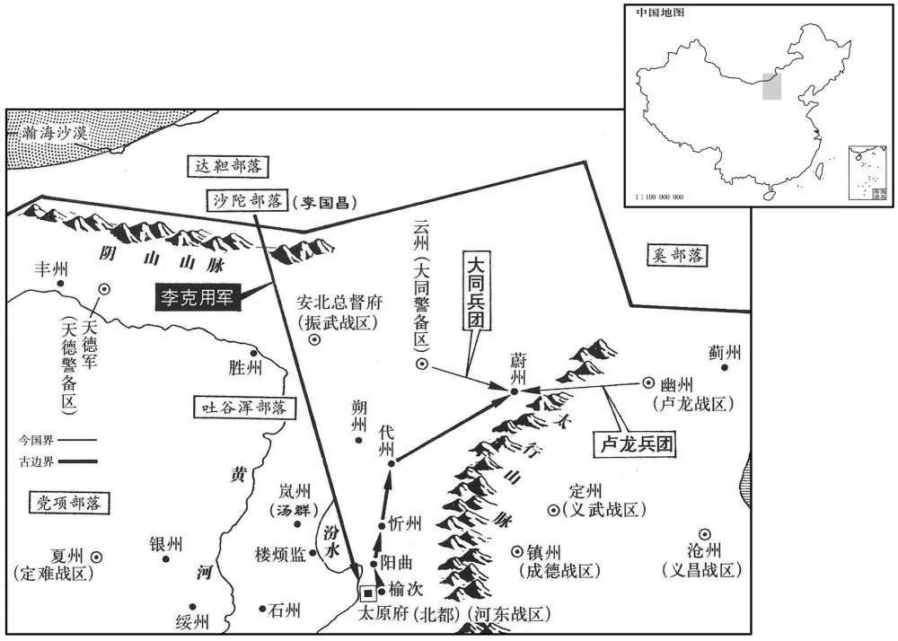

公元881年资治通鉴：本年记事、原文与白话对照
按原书编年位置阅读；追叙和史论不等于本年发生的事件。白话采用所据译本，缺译不以生成译文补齐。
卷254 · 本年记事
公元881年 · 唐僖宗惠圣恭定孝皇帝中和元年
中和元年〔（辛丑、八八一）是年七月方改元〕
上传原文的注释括号有异常，字符原样保留；无法可靠划分的段落默认全文显示。
本年事件索引（现代整理）
- 僖宗离开兴元赴成都，抵达绵州
- 郑畋邀唐弘夫、程宗楚共讨黄巢，斩黄巢使者
- 僖宗车驾抵达成都
- 僖宗屡次催高骈出兵讨黄巢，高骈始终按兵不动
- 裴澈逃奔行在，张浚因不肯拜田令孜而受辱
- 王铎复任宰相
- 郑畋加同平章事
- 高骈任东面都统，代北援军中途退回雁门
- 杨复光任京西南面行营都监
- 朱温奉黄巢命攻陷邓州
- 陈敬瑄加同平章事并遣军讨黄巢
- 郑畋任京城诸军都统，凤翔军大败尚让、王播
- 尚让因讥讽诗杀害尚书省官吏及识字者
- 李友金请朝廷赦召李克用父子，朝廷同意
- 百官陆续抵成都，蜀中府库充足
- 王徽被黄巢逼官，假装失语后逃奔河中
- 诸葛爽弃暗投明，复任河阳节度使
- 拓跋思恭联合李孝昌会兵讨贼
- 齐克俭求助郑畋，郑畋檄告藩镇合兵讨贼
- 王铎加兼侍中
- 拓跋思恭权知夏绥节度使
- 黄巢任王玫为邠宁节度使，朱玫起兵杀王玫
- 关中诸军集结，向长安进逼
- 黄巢弃长安，官军因争功劫掠遭反击惨败，黄巢复入城屠杀
- 黄巢所署同、华、商州官员闻其弃长安，逃往邓州
- 拓跋思恭、李孝昌与黄巢军战于土桥失利
- 王重荣任河中节度使
- 黄巢部众为其上尊号承天应运启圣睿文宣武皇帝
- 高骈见野雉入府，声称出兵讨黄巢却迟迟不动
- 李克用率兵至河东索取供给，纵兵劫掠后被契苾璋击退
- 周岌表面降黄巢，暗中与杨复光结盟谋反
- 秦宗权归附杨复光，官军克邓州并逐朱温
- 高浔、王重荣联兵攻克华州
- 郑畋复任司空、同平章事
- 李克用遇雨退兵，焚掠忻、代二州
- 朱玫退屯奉天、龙尾陂
- 李鋋、巩咸率军屯兴平，屡次击败黄巢军
- 改元中和，大赦天下
- 韦昭度拜相
- 郑从谠斩擅离百井的论安，另派温汉臣驻守
- 成都蜀军怨赏赐不均，郭琪起事后奔往广陵
- 孟昭图谏僖宗疏远朝臣，被田令孜矫诏贬杀
- 李孝昌、拓跋思恭屯东渭桥，与朱温对峙
- 王处存任东南面行营招讨使，朱玫任邠宁节度使
- 夜空流星交错如梭，持续数日
- 时溥矫称支详命令返徐州，夺取留后并杀支详
- 杨复光请升蔡州为奉国军，王绪起兵并任光州刺史
- 高浔败于李详，李详乘胜再取华州
- 拓跋思恭正式任夏绥节度使
- 嗣曹王李龟年从南诏归来，南诏表示愿奉诏
- 李孝昌、拓跋思恭与黄巢军战于东渭桥失利
- 高骈、周宝因猜疑交恶
- 高骈久驻东塘后撤兵回府
- 董昌听钱镠劝告离开广陵，在杭州自立
- 杜雄攻陷台州
- 僖宗立皇子李震为建王
- 成麟杀高浔据潞州，孟方立起兵杀成麟
- 杨复光率忠武军屯驻武功
- 朱褒攻陷温州
- 李昌言趁粮饷短缺率军袭凤翔，郑畋让出留务赴行在
- 曹全晸战死，军中拥立其侄曹存实留后
- 孟楷、朱温袭破鄜、夏二军
- 郑畋辞职不获准，后罢相任太子少傅
- 裴澈出镇鄂岳
- 周宝加同平章事
- 卢约攻陷处州
- 闵勖途经潭州逐李裕，自任留后
- 时溥任感化节度使
- 夏州获赐定难军号
- 雷满逃归朗州起兵，杀崔翥并屡次寇掠荆南
- 周岳率众逐衡州刺史，向緕攻陷澧州
- 王铎请求亲自督军讨贼

本年形势与背景参考图

本年形势与背景参考图
春，正月，车驾发兴元。加牛勖同平章事。陈敬瑄以扈从之人骄纵难制，〔从，才用翻。〕有内园小儿先至成都，〔唐时给役于坊貛及内园者，皆谓之小儿。〕游于行宫，笑曰：「人言西川是蛮，今日观之，亦不恶！」敬瑄执而杖杀之，〔考异曰：新传曰：「敬瑄杀五十人，尸诸衢。」锦里耆旧传曰：「有内园小儿三个连手行，遶行宫数，内一人笑云云。巡者乱打，执之。敬瑄咄之曰：『今日且欲棒杀汝三五十辈，必不令错。』」按三五十辈者，敬瑄语也，非实杀五十人也。新传误。〕由是众皆肃然。敬瑄迎谒于鹿头关。辛未，上至绵州，东川节度使杨师立谒见。〔东川治梓州，北至绵州一百六十八里。见，贤遍翻。〕壬申，以工部侍郎、判度支萧遘同平章事。
春季，正月，唐僖宗的车驾自兴元出发。颁布命令加牛勖为同平章事。陈敬感到唐僖宗的扈从人员骄横而难以控制，有一长安禁宫内园中的小儿先期到达成都，在行宫游荡，笑着说：“人们说西川人是蛮人，今天看来，也不算恶！”陈敬将他逮捕并乱棒打死，于是扈从人员都肃然遵纪。陈敬赶到鹿头关迎接唐僖宗。辛未（二十二日），唐僖宗到达绵州，东川节度使杨师立来拜谒。壬申（二十三日），唐僖宗任命兵部侍郎、判度支萧遘为同平章事。
郑畋约前朔方节度使唐〔【章：十二行本「唐」作「田」；乙十一行本同；孔本同；退斋校同。】〕夕夫、冱原节度使程宗楚同讨黄巢。巢遣其将王晖赍诏召畋，畋斩之，遣其子凝绩诣行在，凝绩追及上于汉州。〔自绵州西南至汉州一百九十里。〕
唐凤翔节度使郑畋约请前朔方节度使唐弘夫、泾原节度使程宗楚共讨黄巢。黄巢派遣部将王晖捧着诏书来招降郑畋，被郑畋斩首。郑畋又派遣其儿子郑凝绩到行营，郑凝绩赶到汉州追上唐僖宗的车驾。
丁丑，车驾至成都，〔自汉州西南至成都八十五里。〕馆于府舍。〔馆，古玩翻。就西川府舍为行宫。〕
丁丑（二十八日），唐僖宗的车驾到达成都，在节度使府舍安歇。
上遣〔【章：十二行本「遣」下有「中」字；乙十一行本同；孔本同；张校同。】〕使趣高骈讨黄巢，〔趣，读曰促。〕道路相望，骈终不出兵。上至蜀，犹冀骈立功，诏骈巡内刺史及诸将有功者，自监察至常侍，听以墨敕除讫奏闻。
唐僖宗派遣使者往淮南节度使高骈处催促他出兵讨伐黄巢，使者往来于道路，前后相望，但高骈始终不肯奉命出兵。唐僖宗来到成都，仍然寄希望于高骈能讨贼立功，颁下诏书给高骈，凡其巡辖境内的刺史及诸将领讨贼有功者，可用墨敕给予自监察御史到散骑常侍的官爵，先任命然后再向朝廷奏报。
裴澈自贼中奔诣行在。时百官未集，乏人草制，右拾遣乐朋龟谒田令孜而拜之，由是握为翰林学士。张浚先亦拜令孜。令孜尝召宰相及朝贵饮酒，〔朝，直遥翻。〕浚耻于众中拜令握为翰林学士。张浚先亦拜令孜。令孜尝召宰相及朝贵饮酒，〔朝，直遥翻。〕浚耻于众中拜令孜，乃先谒令孜谢酒。及宾客毕集，令孜言曰：「令孜与张郎中清浊异流，尝蒙中外，〔中外，谓舆之相表裹。〕既虑玷辱，何惮改更，〔更，工衡翻。〕今日于隐处谢酒则又不可。」浚惭惧无所容。
两版字句有差异，建议核对原文。
裴澈从黄巢贼众中逃奔到成都朝廷。当时朝廷百官未能会集，缺乏草写诏制的人才，右拾遗乐朋龟面见田令孜并下拜，于是被提拔为翰林学士。张浚起先也曾向田令孜下拜。田令孜曾经召集宰相及宦官权贵们一起饮酒，张浚感到在大庭广众面前向宦官田令孜下拜是件耻辱的事，于是在宴会前先拜见田令孜谢酒，及宾客全部来齐之时，田令孜说：“我田令孜与张郎中分属内外朝，清浊异流，今天共同敬酒，的确是愉快的事，朝官如果顾虑和宦官一起饮酒玷辱了身份，又何必要改时间于宴会前来谢酒呢？今天张郎中于隐蔽之处向我谢酒，这怎么可能以呢？”一番话说得张浚又惭愧又恐惧，满脸通红，无地自容。
二月，乙〔严：「乙」改「己」。〕卯朔，以太子少师王铎守司徒兼门下侍郎、同平章事。
二月，乙卯朔（初一），唐僖宗任命太子少师王铎守司徒兼门下侍郎、同平章事。
丙申，加郑畋同平章事。
丙申（十八日），加给郑畋同平章事的官衔。
加淮南节度使高骈东面都统，加河东节度使郑从谠兼侍中，依前行营招讨使。代北监军陈景思〔考异曰：实录作「掠斯」，今从薜居正五代史。〕帅沙陀酋长李友金及萨葛、穴庆、吐谷浑诸部入授京师。〔帅，读曰率。酋，慈由翻。长，知两翻。萨，桑葛翻。〕至绛州，将济河；绛州刺史瞿稹，亦沙陀也，〔瞿，权俱翻。稹，止忍翻。〕谓景思曰：「贼势方盛，未可轻进，不若且遇代北募兵。」遂与景囮俱还鴈门。
加淮南节度使高骈东面都统官衔，加河东节度使郑从谠兼侍中，先前所任行营招讨使依旧充任。唐代北监军陈景思率领沙陀族酋长李友金以及由萨葛、安庆、吐谷浑等部族人组成的军队向关中进发，入援京师。行至绛州，将要渡过黄河；绛州刺史翟稹也是沙陀族人，对陈景思说：“黄巢贼众势头正盛，你我所率军队兵员太少，不可轻易前进，不如暂且回到代北去召募兵员。”于是瞿稹会同陈景思一同回到雁门。
以枢密使杨复光为京西南面行营都监。
唐僖宗任命枢密使杨复光为京西南面行营都监。
黄巢以朱温为东南面行营都虞候，将兵攻邓州；三月，辛亥，陷之，执刺史赵戒，〔【章：十二行本「戒」作「戎」；乙十一行本同；孔本同；退斋校同。】〕因戍邓州以扼荆、襄。〔九域志：邓州南至襄州一百八十里，襄州南至荆州四百五十七里。〕
黄巢任命朱温为东南面行营都虞候，率领军队进攻邓州；三月，辛亥（初三），朱温攻陷邓州，活捉邓州刺史赵戒，于是率军戍守邓州，以控扼荆州、襄州地区。
壬子，加陈敬瑄同平章事。甲寅，敬瑄奏遣左黄头军使李鋋将兵击黄巢。〔西川黄头军，崔安潜所置也，事始见上卷干符六年。鋋，时延翻。〕
壬子（初四），唐僖宗加给陈敬同平章事的官衔。甲寅（初六），陈敬奏告唐僖宗，派遣左黄头军使李铤率领西川黄头军袭击黄巢军。
辛酉，以郑畋为京城四面诸军行营都统。赐畋诏：「凡蕃、汉将士赴难有功者，〔难，乃旦翻。〕并听以墨敕除官。」畋奏以冱原节度使程宗楚为副都统，前朔方节度使弘夫为行军司马。黄巢遣其将尚让、王播帅众五万寇凤翔，〔「王播」，新书作「王璠」。〕畋使弘夫伏兵要害，自以兵数千，多张旗帜，疏陈于高冈。〔陈，读曰阵。〕贼以畋书生，轻之，鼓行而前，无复行伍，〔行，户刚翻。〕伏发，贼大败于龙尾陂，〔新、旧书皆作「龙尾坡」，惟旧纪作「陂」。凤翔府岐山县，唐初治张堡，武德七年移治龙尾城，在平阳故城之东北。〕斩首二万余级，伏尸数十里。
辛酉（十三日），唐僖宗任命郑畋为京城四面诸军行营都统。又赐给郑畋诏书：“凡是我军队不管是蕃族，还是汉族的将士赴难讨贼有功者，都可以用墨敕先赏给他们官职。”郑畋上奏，请以泾原节度使程宗楚为副都统，并请任前朔方节度使唐弘夫为行军司马。这时，黄巢派遣其部将尚让、王播率领兵众五万余人进攻凤翔，郑畋布置唐弘夫在长安至凤翔路上的要害之处设下伏兵，自己率数千军队，举着许多旗帜，疏疏拉拉地于山岗高处布阵。黄巢军认为郑畋是一介书生，对他相当轻视，敲着战鼓蜂涌而进，军队没有队形，向前乱冲乱杀，一时唐伏兵四起，黄巢军大败于龙尾陂，被斩首者达二万余级，伏卧于地的尸体长达数十里。
有书尚书省门为诗以嘲贼者，尚让怒，应在省官及门卒，悉抉目倒悬之；〔抉，于决翻。〕大索城中能为诗者，〔索，山客翻。〕尽杀之，识字者给贱役，凡杀三千余人。
有人在长安尚书省都堂官府大门上涂写诗句，嘲弄黄巢军，尚让见后勃然大怒，将当时在尚书省的官员和守门的士兵，全部挖去眼睛，头足倒悬挂于门前；又于长安城中大肆搜索能写诗的人，抓到的全部杀死，凡认识字的人均罚作贱役，所杀总计有三千余人。
瞿稹、李友金至代州，募兵踰旬，得三万人，皆北方杂胡，屯于崞西，〔代州崞县之西也。崞，音郭。〕犷悍暴横，〔犷，古猛翻。悍，下罕翻，又侯干翻。横，户孟翻。〕稹与友金不能制。友金乃说陈景思曰：〔说，式芮翻。〕「今虽有众数万，苟无威信之将以统之，终无成功。吾兄司徒父子，勇略过人，为众所服；骠骑诚奏天子赦其罪，召以为帅，〔李国昌以平庞勋功检校司徒。骠骑，唐制武散阶极品。唐自高力士以来，宦官多官至骠骑，故以称景思。〕则代北之人一麾响应，狂贼不足平也！」景思以为然，遣使诣行在言之；诏如所请。友金以五百骑赍诏诣达靼迎之，〔李克用入达靼，见上卷广明元年。军镇。」薜居正五代史：「先是，景思与李友金发沙陀诸部五千骑南赴京师。友金，即武皇之族父也。中和元年二月，友金军至绛州，将渡河，刺史瞿稹谓景思曰：『巢贼方盛，不如且还代北，徐图利害。』四月，友金旋军鴈门，瞿稹至代州，半月之间，募兵三万，营于崞县之西，其军皆北边五部之众，不闲军法，睢稹、李友金不能制。友金谓景思云云，景思然之，促奏行在。天子乃以武皇为鴈门节度使，仍令以本军讨贼。李友金发五百骑赍诏召武皇于达靼，武皇即帅达靼诸部万人趋鴈门。」按景思谓赦国昌父子，而独克用至者，盖国昌已老，独使克用来耳。是岁，克用但攻掠太原，又陷忻、代二州。明年十二月，始自忻、代留后除鴈门节度使。盖此际止赦其众，复为大同防御使。及陷忻、代，自称留后，朝廷再召之，始除鴈门。薜史误也。新表，「中和二年，以河东忻、代二州隶鴈门节度，更大同节度为鴈门节度，治代州。」此其证也。〕
唐将瞿稹、李友金来到代州，十多天后，募得士兵三万人，都是北方的杂胡，驻扎在崞县之西，这些胡族士兵粗犷骠悍，暴虐凶横，瞿稹和李友金都无法控制。李友金于是游说陈景恩：“今天虽然有兵众好几万人，如果没有威信卓著的将领统帅他们，最终是不能成功的。我的兄长司徒李国昌与他的儿子李克用，均有过人的勇力和智略，为兵众所推服；陈骠骑如果能上奏大唐天子赦免他们的罪，召回他们任为统帅，就可以使代北诸胡士兵群起响应，贼寇再猖狂也不足以平定了！”陈景恩听后感到有道理，于是派遣使者到成都行宫向唐僖宗奏请；唐僖宗颁下诏书批准了陈景恩的请求。李友金于是怀着诏书带五百骑兵到鞑靼往迎李国昌、李克用父子，李克用奉诏后立即率领鞑靼诸部兵万余人开进塞内赴援。
群臣追从车驾者稍集成都，南北司朝者近二百人，〔朝，直遥翻。近，其靳翻。〕诸道及四夷贡献不绝，蜀中府库充实，与京师无异，赏赐不乏，士卒欣悦。
唐朝诸大臣追从唐僖宗车驾者逐渐聚集于成都，南衙和北司朝见皇上者有近二百人，诸道地方官和四姨酋领贡献给成都行宫的物资连绵不起，蜀中府库很充实，与往年在京师时没有两样，于是唐僖宗给予将士的赏赐并不缺乏，士卒欢欣鼓舞。
黄巢得王徽，逼以官，徽阳瘖，不从；月余，逃奔河中，遣人间道奉绢表诣行在。〔间，古苋翻。〕诏以徽为兵部尚书。
黄巢捕获王徽，逼他出任大齐的官职，王徽装聋不说话，不肯从命。一个月后，王徽逃奔于河中，派人走小路将写于绢上的表文送到成都行宫。唐僖宗颁下诏书任命王徽为兵部尚书。
前夏绥节度使诸葛爽复自河阳奉表自归，〔去年葽巢入关，诸葛爽降之。〕即以为河阳节度使。
唐前绥节度使诸葛爽自河阳奉表朝廷，表示要弃暗投明，复归大唐，唐僖宗立即任诸葛爽为河阳节度使。
宥州刺史拓跋思恭，〔开元十六年，以六胡州残人置宥州，干元元年，理经略军，后移治长泽县。长泽，汉朔方邵三封县地。考异曰：欧阳修五代史作「拓跋思敬」，意谓薜史避国讳耳。按旧唐书、实录皆作「思恭」。实录：「天复天年九月，武定军节度使李思敬以城降王建。思敬本姓拓跋，鄜夏节度使思恭、保大节度使思孝之弟也。思孝致仕，以思敬为保大留后，遂升节度，又徙武定军。」新唐书党项传曰：「思恭为定难节度使，卒，弟思谏代为节度。思孝为保大节度，以老，荐弟思敬为保大留后，俄为节度。」然则思恭、党项以姓别为部落，而拓跋氏最强。〕纠合夷、夏兵会鄜延节度使李孝昌于鄜州，司盟讨贼。〔夏，户雅翻。鄜，音夫。〕
两版字句有差异，建议核对原文。
唐宥州刺史拓跋思恭本为党项羌族人，这时纠合夷族、汉族士兵，在州会合延节度使李者昌，结成同盟以讨伐黄巢军。
奉天镇使齐克俭遣使诣郑畋求自效。甲子，畋传檄天下藩镇，合兵讨贼。时天子在蜀，诏令不通，天下谓朝廷不能复振，及得畋檄，争发兵应之。贼惧，不敢复窥京西。〔复，扶又翻。〕
唐奉天镇使齐克俭派遣使者到郑畋处要求投军自效，以雪洗潼关外战败的耻辱。甲子（十六日），郑畋向全国各藩镇发布檄文，号召天下藩镇合兵攻讨黄巢贼寇。当时大唐天子居留于蜀地，诏令不通畅，天下藩镇由于消息不通，都传言大唐王朝不能再复兴振作，这时得到郑畋的檄文，都争着调发军队响应。黄巢对于这种形势感到恐惧，不敢再派兵窥伺长安以西的地方。
夏，四月，戊寅朔，加王铎兼侍中。
夏季。四月，戊寅朔（初一），唐僖宗加王铎官兼侍中。
以拓跋思恭权知夏绥节度使。〔为拓跋氏强盛遂跨据西夏张本。〕
任命拓跋思恭为权知夏绥节度使。
黄巢以其将王玫为邠宁节度使，邠州通塞镇将朱玫起兵诛之，〔玫，莫杯翻。〕让别将李重古为节度使，自将兵讨巢
黄巢任命其部将王玫为宁节度使。唐州通塞镇将朱玫起兵将王玫诛杀，让别将李重古为州节度使，自己率领军队攻讨黄巢军。
是时，唐弘夫屯渭北，王重荣屯沙苑，王处存屯渭桥，拓跋思恭屯武功，郑畋屯盩厔。弘夫乘龙尾之捷，进薄长安。
这时，唐弘夫率军驻扎于渭北，王重荣率军屯驻沙苑，王处存驻军渭桥，拓跋思恭屯军武功，郑畋统率大军进驻，形成四面合围长安的形势。唐弘夫乘龙尾大捷的余威率军猛进，逼近长安。
壬午，黄巢帅众东走，程宗楚先自延秋门入，〔长安苑城有门，西出谓之延秋门。〕弘夫继至，处存帅锐卒五千夜入城。〔帅，读曰率；下同。〕坊市民喜，争讙呼出迎官军，〔讙，读曰喧。〕或以瓦砾击贼，〔砾，狼秋翻。〕或拾箭以供官军。宗楚等恐诸将分其功，不报凤翔、鄜夏，〔句断。〕军士释兵入第舍，掠金帛、妓妾。〔妓，渠绮翻。〕处存令军士系白鮗为号，〔鮗，诣趋翻，缯头也；以约发谓之头鮗。〕坊市少年或窃其号以掠人。贼露宿霸上，〔宿无室卢曰露宿。〕诇知官军不整，〔诇，翾正翻，又火迥翻。〕且诸军不相继，引兵还袭之，自诸门分入，大战长安中，宗楚、弘夫死，〔考异曰：旧纪、传、新传皆云弘夫败在二年二月，惊听录、唐年补录、新纪、实录皆在此年四月。新纪日尤详，今从之。〕军士重负不能走，是以甚败，死者什八九。处存收余众还营。
丁亥，巢复入长安，怒民之助官军，纵兵屠杀，流血成川，谓之洗城。于是诸军皆退，贼势念炽。
壬午（初五），黄巢率军出长安城向东方撤退，唐将程宗楚率军首先自延秋门进入长安城，唐弘夫紧接着率军赶到，王处存率领精锐士兵五千人于夜晚也进入长安。长安坊市居民十分欢喜，争先恐后地出来欢迎官军，欢呼声响成一片，有的人还用瓦砾投击黄巢军，也有人收拾箭头供给官军。入城的程宗楚等人恐怕其他将领入城分去他们的战功，竟不通报凤翔节度使郑畋和夏节度使拓跋思恭，入城的官军士兵们放下军器进入居民私宅，抢夺金帛，掠取妓妾。王处存下令军士系上白色丝绸头作为记号，但坊市无赖少年不少人也载上白丝头，照样掠人劫货，使长安城内一片混乱。黄巢率军露宿于霸上，侦察到城内官军号令不整，而且围长安的诸路官军互不联系，于是率军还袭长安，黄巢军自诸城门分别进入，大战于城中，唐将程宗楚、唐弘夫都被杀死，官军士兵由于抢劫物太多，负重而走不动路，被黄巢军杀得大败，死者有十分之八九。王处存收拾残兵余众归还到渭桥扎营地。丁亥，（十月）黄巢再进入长安，对长安居民帮助官军感到极为愤怒，于是纵兵进行屠杀，长安城血流成河，称之为洗城。于是唐诸路军全部撤退，黄巢军的声势更盛。
贼所署同州刺史王溥、华州刺史乔谦、商州刺史宋岩闻巢弃长安，皆率众奔邓州，朱温斩溥、谦，释岩，使还商州。
黄巢所任命的同州刺史王溥、华州刺史乔谦、商州刺史宋岩听黄巢已放弃长安，均率领部众投奔邓州，朱温将王溥、乔谦问斩，而将宋岩释放，让他率军还商州。
庚寅，拓跋思恭、李孝昌与贼战于土〔【章：十二行本「土」作「王」，乙十一行本同；孔本同；熊校同。】〕桥，不利。
庚寅（十三日），唐将拓跋思恭、李孝昌率官军与黄巢军在土桥激战，官军失利。
诏以河中留后王重荣为节度使。
唐僖宗颁发诏书任命河中留后王重荣为河中节度使。
贼众上黄甾巢尊号曰承天应运启圣睿文宣武皇帝。
大齐百官给黄巢上尊号，称为承天应运启圣睿文宣武皇帝。
有只雉集广陵府舍，占者以为野鸟来集，城邑将空之兆。高骈恶之，〔恶，乌路翻。〕乃移檄四方，云将入讨黄巢，悉发巡内兵八万，舟二千艘，旌旗甲兵甚盛。五月，乙〔【章：十二行本「乙」作「己」；乙十一行本同；孔本同；张校同。】〕未，出屯东塘。〔东塘，在今扬州城东，即今湾头至宜陵一带塘岸也。艘，苏遭翻。考异曰：妖乱志曰：「自五月十一日出东塘，至九月六日归府，九十余日，禳雉雊之变也。」按于月十二日至九月六日，乃是一百六十三日，非九十余日。今从旧传。〕诸将数请行期，〔数，所角翻。〕骈托风涛为阻，或云时日不利，竟不发。
有一对野鸡飞集于广陵淮南节度使府舍，占卜者认为野鸟飞来集合，是广陵城邑将要淘空的徵兆。高骈对此感到厌恶和恐惧，于是向四方传布檄文，声言将要入关中讨伐黄巢，调发所巡辖地境所有军队八万人、船二千艘，旌旗挥舞，军势旺盛。五月，己未（十二日），大军出屯于东塘。淮南诸将领多次向高骈问出征的行期，高骈托言江河风涛太大阻挡大军行军，又托言时日不吉利，结果最终没有出发。
李克用牒河东，称奉诏将兵五万讨黄巢，令具顿递，〔绿道设酒食以供军为顿，置邸驿为递。〕郑从谠闭城以备之。克用屯于汾东，从谠稿劳，〔犒，口到翻。劳，力到翻。〕给其资粮，累日不发。克用自至城下大呼，〔呼，火故翻。〕求与从谠相见，从谠登城谢之。癸亥，复求发军赏给，〔复，扶又翻。〕从谠以钱千缗、米千斛遗之。〔遗，唯季翻。〕甲子，克用纵沙陀剽掠居民，〔剽，匹妙翻。〕城中大骇。从谠求救于振武节度使契苾璋，〔契，期讫翻。〕璋引突厥、吐谷浑救之，破沙陀两寨，克用追战至晋阳城南，璋引兵入城，沙陀掠阳曲、榆次而归。
李克用给河东节度使府发送牒文，声称奉唐僖宗诏命率兵五万征讨黄巢，要求节度使府沿道准备酒食以供军，并设置邮驿。河东节度使郑从谠紧闭城门对李克用严设戒备。李克用率军于汾东驻屯，郑从谠派人去犒劳，并送给李克用军资粮草，全李克用驻留多日而不开拔。李克用亲自来到晋阳城下呼喊，要求与河东节度使郑从谠相见，郑从谠登上城楼向李克用致谢。癸亥（十六日），又要求发给粮饷赏钱，郑从谠送给钱干，米千斛。甲子（十七日），李克用放纵沙陀军抢掠居民，城中大为惊恐。郑从谠派人向振武节度使契璋求救，契璋率领突厥、吐谷浑兵赶来援救，攻破沙陀军两个寨，李克用率大军出战，追契璋军至于晋阳城南，契璋率军进入晋阳城，于是李克用所率沙陀军队抢掠阳曲、榆次后北归。
黄巢之克长安也，忠武节度使周岌降之。〔去年十一月授周岌忠武节，十二月而黄巢克长安。〕岌尝夜宴，急召监军杨复光，〔先是以杨复光为忠武监军，屯邓州，扼贼右冲。巢既陷长安，遣朱温屯邓州，复光遂至许州依周岌，故召之夜宴。〕左右曰：「周公臣贼，将不利于内侍，不可往。」〔唐内侍省以内侍盬为之长，内侍为贰，故左右以称复光。〕复光曰：「事已如此，义不图全。」即诣之。酒酣，岌言及本朝，〔朝，直遥翻。〕复光泣下，良久，曰：「丈夫所感者思义耳！公自匹夫为公侯，柰何拾十八叶天子而臣贼乎！」〔自高祖至僖宗十八世。〕岌亦流涕曰：「吾不能独拒贼，故貌奉而心图之。今日召公，正为此耳。」〔为，于伪翻。〕因沥酒为盟。〔史照曰：以酒滴沥也。〕是夕，复光遣其养子守亮杀贼使者于驿。
黄巢攻克长安之时，唐忠武军节度使周发投降于黄巢。周岌有一次举行夜宴，急召忠武监军杨复光赴宴，杨复光左右部属劝道：“周公已投降于黄巢贼，恐怕将不利于内侍监，不可轻易前往。”杨复光回答说：“事情已到这般境地，为赴义就不能希图自己身家性命。”于是前往赴宴。往酒一通至兴头上时，周岌谈到大唐王朝，杨复光一边听一边流泪，过了一会儿，杨复光对周岌说：“大丈夫最为感戴的东西，当是恩义！你自一介匹夫而位列公侯，为何要舍弃立国已十八世的唐朝，而向黄巢贼称臣呢？”周岌听后也泪流满面，说：“我不能孤军抗贼寇，所以表面上向贼称臣，而内心却在杨办法拒贼呀！今天召你来，正是为商议此事的。”因此将酒滴洒于地而起盟，誓言忠于唐朝而扫平寇难。这天晚上，杨复光派遣其养子在驿馆将黄巢派来的使者杀死。
时秦宗权据蔡州，不从岌命，复光将忠武兵三千诣蔡州，说宗权同举兵讨巢。〔说，式芮翻。〕宗权遣其将王淑将兵三千从复光击邓州，逗留不进，复光斩之，并其军，分忠武八千人为八都，遣牙将鹿晏弘、晋晖、王建、韩建、张造、李师泰、庞从等八人将之。〔考异曰：刘恕十国纪年上云：八都而下，止有王建等七人姓名，诸书不可考故也。王建始此。〕王建，舞阳人；韩建，长社人；晏弘、晖、造、师泰，皆许州人也。复光帅八都与朱温战，败之，〔帅，读曰率。败，补迈翻。〕遂克邓州，逐北至蓝桥而还。〔蓝桥，在蓝田关南。还，从宣翻，又如字。〕
当时秦宗权占据蔡州，不听从周岌的命令，杨复光率领忠武军三千人来到蔡州，劝说秦宗权一同举兵讨伐黄巢。秦宗权于是派遣其部将王淑率领三千人的军队随从杨复光进击邓州，王淑逗留不进，杨复光将他斩首，兼并他的军队，又将忠武军八千人分为八都，派遣牙将鹿宴弘、晋晖、王建、韩建、张造、李师泰、庞从等八人分别统率。王建是舞阳人，韩建是长社人；鹿晏弘、张造、李师泰都是许州人。杨复光率领八都军队与黄巢部将朱温作战，将朱温击败，于是攻克邓州，向北追逐朱温残军，至蓝桥才还师。
昭义节度使高浔会王重荣攻华州，克之。
唐昭义军节度使高浔会合河中王重荣军进攻华州，将城攻克。
六月，戊戍，以郑畋为司空兼门下侍郎、同平章事，都统如故。
六月，戊戌（二十二日），唐僖宗任命郑畋为司空兼门下侍郎、同平章事，并依旧任都统。
李克用遇大雨，〔【章：十二行本「雨」下有「己亥」二字；乙十一行本同；孔本同；张校同。】〕引兵北还，陷忻、代二州，因留居代州。〔考异曰：唐末见闻录：「六月三十日，沙陀军郄回，收郄忻、代州。」太祖纪年录：「遇大雨，六月二十三日，班师鴈门。」薜居正五代史与纪年录同。按忻、代先属河东，中和二年始割隶鴈门。今从见闻录、实录。〕郑从谠遣教练使论安等军百井以备之。
李克用沙陀军遇以大雨，于是引军北还，攻陷忻州、代州，因而留居于代州。郑从谠派遣教练使论安等率军驻扎于百井，以防备沙陀军。
邠宁节度副使朱玫屯兴平，〔兴平县，在长安西八十五里。余靖曰：周丈丘，今之兴平。〕黄巢将王播〔严：「播」改「璠」。〕围兴平，玫退屯奉天及龙尾陂。
唐宁节度副使朱攻率领军队驻扎在兴平，黄巢派部将王播围攻兴平，朱攻率军撤退，驻扎在奉天及龙尾陂。
西川黄头军使李鋋将万人，巩咸将五千人〔巩，姓也。周卿士巩简公，晋大夫巩朔。〕屯兴平，为二寨，兴黄巢战，屡捷；陈敬瑄遣神机营使高仁厚将二千人益之。〔神机营，亦崔安潜置，事见上卷干符六年。〕
西川黄头军使李铤率领万余人，巩咸率领五千人，进屯兴平，扎下两个营寨，出兵与黄巢军作战，屡有捷获；西川节度使陈敬派遣神机营使高仁厚率领二千人增援李铤、巩咸二军。
秋，七月，丁巳，改元，赦天下。〔改元中和。〕
秋季，七月，丁巳（十一日），改年号为中和，大赦天下。
庚申，以翰林学士承旨、兵部侍郎韦昭度同平章事。
庚申（十四日），唐僖宗任命翰林学士承旨，兵部侍郎韦昭度为同平章事。
论安自百井擅还，郑从谠不解跋衫，斩之，灭其族。〔跋，兴靴同。考异曰：唐末见闻录：「六月三十日，沙陀收郄忻、代州，使司差教练使论安、军使王蟾、高弁、回鹘、吐蕃等军于百井下寨守御。当月内，论安等拔寨，郄回到府。」按当月内，即三十日也。一日之中，不容有尔许事，必非也。又曰：「至七月十四日，相公排饭大将等，于坐上把起论安，不脱靴，于球场内处置，族灭其家。又差都头温汉臣将兵依前于百井下寨。当月内，契苾尚书领兵马郄归振武。」今从之。〕更遣都头温汉臣将兵屯百井。契苾璋引兵还振武。
论安擅自由百井率军回晋阳，河东节度使郑从谠极为愤怒，将论安不脱靴，不解衣衫即行问斩，并诛灭其家族。另外派遣都头温汉臣率领军队进屯百井，契璋也率本部军队回到振武。
初，车驾至成都，蜀军赏钱人三缗。田令孜为行在都指挥处置使，每四方页金帛，辄颁赐从驾诸军无虚日，〔【章：十二行本「日」作「月」；乙十一行本同；孔本同；熊校同。】〕不复及蜀军，〔复，扶又翻。〕蜀军颇有怨言。丙寅，令孜宴土客都头，〔土军，蜀军。客军，从驾诸军。唐之中世，以诸军总帅为都头。至其后也，一部之军谓之一都，其部帅呼为都头。〕以金杯行酒，因赐之，诸都头皆拜而受。西川黄头军使郭琪独不受，起言曰：「诸将月受俸料，丰赡有余，常思难报，岂敢无厌！〔俸，扶用翻。厌，于盐翻。〕顾蜀军与诸军同宿卫，而赏赉悬殊，颇有觖望，〔觖，古穴翻，怨望。〕恐万一致变。顾军容减诸将之赐以均蜀军，使土客如一；则上下幸甚！」令孜默然有间，曰：〔间，如字。「汝尝有何功﹖」对曰：「琪生长山东，〔长，知两翻。〕征戍边鄙，尝与党项十七战，契丹十余战，〔契，欺讫翻。〕金创满身，〔创，初良翻。〕又尝征吐谷浑，伤肠，出线缝复战。」〔复，扶又翻。〕令孜乃自酌酒于别樽以赐琪。琪知其毒，不得已，再拜饮之；归，杀一婢，吮其向以解毒，吐黑汁数升，〔吮，如兖翻。吐，土故翻。〕遂帅所部作乱，〔帅，读曰率。〕丁卯，焚掠坊市。令孜奉天子保柬城，闭门登楼，命诸军击之。琪引兵还营，陈敬瑄命都押牙安金山将兵攻之，琪夜突围出，奔广都，〔隋改广都县为变流县，唐龙朔二年复分双流置广都县，属成都府。九域志：在府西四十五里。〕从兵皆溃，〔从，才用翻。〕独厅吏一人从息于江岸。琪谓厅吏曰：「陈公知吾无罪；然军府惊扰，不可以莫之安也。汝事吾能始终，今有以报汝。汝赍吾印剑诣陈公曰：『郭琪走渡江，我以剑击之，坠水，尸随湍流下矣；得其印剑以献。』陈公必据汝所言，膀悬印剑于安众。汝当获厚赏，吾家亦保无恙。吾自此适广陵，归高公，〔言欲奔扬州归高骈也。〕后数日，汝可密以语吾家也。」〔语，牛倨翻。〕遂解印剑授之而逸。厅吏以献敬瑄，果免琪家。
起初，唐僖宗的车驾来到成都时，蜀中军队每人赏钱三缗。田令孜任行在都指挥处置使后，每有四方贡输而来的金帛，就自作主张颁发和赐予随从车驾来到成都的外镇诸军，而且几乎每日都有赏赐，而蜀中军队却不再得到什么奖赏，于是蜀军有很多怨言。丙寅（二十日），田令孜为本土蜀军和外来客军都头设宴，用金杯行酒，并因此将金杯赐给诸都头，都头们都拜而接受，独有西川黄头军使郭琪不受赐，并站起来说：“诸都将每月领有俸料钱，所得丰厚，赡养一家而有余，经常想到难以报答所蒙受的厚恩，岂敢贪得无厌，再受金杯。我看到蜀中军队与外镇诸军同作宿卫，而所给赏赐却大有悬殊，故蜀军多有怨气，恐怕万一激致变乱，难以收拾。愿田军容减免给予诸将的特别赏赐，用以平均地赐给蜀军，使土军与客军奖赏如一，这样上下都会感到庆幸和欢天喜地的！”田令孜听罢默然无言，好一会儿才问郭琪说：“你曾立过什么军功？”郭琪回答说：“我生长在崤山以东地区，并不是蜀地人，曾在边远地区征讨屯戌，率军与党项作战十七次，与契丹作战十余次，满身都有金创伤疤，又曾经出征吐谷浑，被击伤肚皮，肠子都流出来了，用线缝上后马上又投入战斗。”田令孜于是用另外一个酒杯亲自斟满酒赐给郭琪，郭琪知道酒中已下毒，不得已，再拜将酒饮下。回到家中后，杀死一个婢女，吮吸她的血来解毒，结果吐出黑色的毒汁好几升，于是率领所部造反作乱，丁卯（二十一日），焚烧和抢劫成都坊市，成都城一片混乱。田令孜奉拥着唐僖宗保居东城，紧闭城门并登上城楼，命令诸军攻击郭琪所率领的乱军。郭琪率领军队回到营地，陈敬命令都押牙安金山率领军队来围攻，郭琪于夜晚突围而出，逃奔广都，随从他的士兵他部溃散，只有其军府厅吏一人跟从，于江岸休息。郭琪对厅吏说：“陈公敬知道我无罪，但军府已被惊扰，不可能不清除我而使军府安定下来。你追随我能始终如一，今天有一个办法可以报答你。你可奉我的官印和利剑去向陈公报告，就说：‘郭琪渡江逃走，我用剑将他击落于水中，尸体随急流而下，缴得他的官印和剑，献给陈公。’陈公必定会根据你所说的，将我的印和剑悬于成都坊市，张榜以安定众心。你也必定能为此获得丰厚的奖赏，我的一家人也可因此得保而无恙。我由此前往广陵，投奔淮南节度使高骈，几天过后，你可以私下将我的情况告诉我家。”于是将印和剑解下授予厅吏，顺流东逃。厅吏将官印和剑献给陈敬，果然，郭琪一家得到赦免。
上日夕专与宦者同处，议天下事，待外臣殊疏薄。〔处，昌吕翻。外臣，谓外廷之臣，宰相以下百执事皆是也。〕庚午，左拾遗孟昭图上疏，以为：「治安之代，遐迩犹应同心；〔治，直吏翻。〕多难之时，中外尤当一体。〔难，乃旦翻。〕去冬车驾西幸，不告南司，遂使宰相、仆射以下悉为贼所屠，〔谓豆卢瑑、崔沆及于琮等也。〕独北司平善。况今朝臣至者，皆冒死崎岖，远奉君亲，所宜自兹同休等戚。伏见前夕黄头军作乱，陛下独与令孜、敬瑄及诸内臣闭城登楼，并不召王铎已下及收朝臣入城；翌日，又不对宰相，又不宣慰朝臣。〔翌日，明日也。〕臣备位谏官，至今未知圣躬安否，况疏冗乎！〔冗，而陇翻，散也。〕傥群臣不顾君上，罪固当诛；若陛下不恤群臣，于义安在！夫天下者，高祖、太宗之天下，非北司之天下；天子者，四海九州岛之天子，非北司之天子。北司未必尽可信，南司未必尽无用。岂天子与宰相了无关涉，朝臣皆若路人！如此，恐收复之期，尚劳圣虑，尸禄之士，得以宴安。臣躬被宠荣，〔被，皮义翻。〕职在裨益，虽遂事不谏，而来者可追。」〔二语皆本之论语。〕疏入，令孜屏不屏不奏。〔屏，必郢翻。〕辛未，矫诏贬昭图嘉州司户，遣人沉于鞾颐津，〔鞾颐山，在眉州眉山东七里，山状如鞾颐，因名。山临江津，今有孟拾遗祠。鞾，谟加翻。〕闻者气塞而莫敢言。〔天子杀谏臣者，必亡其国。以阉官而专杀谏臣，自古以来未之有也。此不特害于而国，实亦凶于而身。是以唐未亡而令孜之身先亡也。塞悉则翻。〕
唐僖宗日夜专门与宦官同处，共议天下之事，而待禁外朝臣越来越疏远，礼遇也越来越薄。庚午（二十四日），左拾遗孟昭图上疏谏诤，认为：”太平治安时期，远近犹应同心协力；国家多难时期，中朝外朝更应该同为一体。去年冬季，皇上车驾西行，不告诉南司宰相朝臣，以致使宰相、仆射以下百官都被黄巢贼寇所屠杀，只有北司宦官得平安无事。况且如今朝臣能到达这里，都是冒着生命危险，经过崎岖之道，才得以远道来侍奉君上，所以应当从此休戚与共。而我看到前天傍晚西川黄头军作乱，陛下只是与田令孜，陈敬及诸宦官内臣紧闭城门登上城楼躲避，并不召宰相王铎并让朝世入城；第二天，又不召对宰相，也不宣慰朝臣。我位至谏臣，却至今不知道陛下圣体是否安泰。倘若群臣不顾君上，其罪固然应当遭诛，若陛下不抚恤群臣，于理义上也说不过去。大唐天下是高祖、太宗开创的天下，并不是北司宦官的天下；大唐天子是四海九州百姓的天子，也不是北司宦官的天子。北司宦官未必人人尽可信任，南司朝官也未必人人都夫用。岂有天子与宰相毫无关系，朝臣都视如路人！这样下去，恐怕收复京师之期，还要有劳于陛下思虑，而尸位素餐之士，却得以安享酒宴。我受到陛下的宠任有幸被任为谏臣，职责就是上言谏诤，以有裨益于国家，虽然我不一定尽到了随事谏诤的职责，但有后来者可以继续谏诤。”疏状送入行宫禁内，被田令令孜扣留，而不上奏于唐僖宗。辛未（二十五日），田令孜假借唐僖宗的名义矫诏贬孟昭图为嘉州司户，又派人于颐津将孟昭图投入江中淹死。朝臣闻知此事都义愤填膺，敢怒而不敢言。
鄜延节度使李孝昌、权夏州节度使拓跋思恭屯东渭桥，黄巢遣朱温拒之。
唐延节度使李孝昌、权夏州节度使拓跋思恭率军驻扎在东渭桥，黄巢派朱温率军抵抗。
以义武节度使王处存为柬南面行营招讨使，以邠宁节度副使朱玫为节度使。
唐僖宗任命义武节度使王处存为东南面行营招讨使，又任命宁节度副使朱玫为宁节度使。
八月，己丑夜，星交流如统，或大如杯苈，至丁酉乃止。
八月，己丑（十三日）夜晚，天空流星交织如梭，有的大如杯，有的大如碗，到丁酉（二十一日）才止。
武宁节度使支详〔按新书方镇表，懿宗咸通十一年，复徐州节镇，赐号感化军。自此迄于天复，未尝复武宁旧额。以下文以感化留后时溥为节度使证之，武宁误也，当作「感化」。〕遣牙，将时溥、陈璠将兵五千入关讨黄巢，〔璠，孚袁翻。〕二人皆详所奖拔也。溥至东都，矫称详命，召师还与璠合兵，屠河阴，掠郑州而东。及彭城，详迎劳，犒赏甚厚。〔璠，音番。劳，力到翻。〕溥遣所亲说详曰：〔说，式芮翻。〕「众心见迫，请公解印以相授。」详不能制，出居大彭馆，溥自知留务。璠谓溥曰：「支仆射有惠于徐人，不杀，必成后悔。」溥不许，送详归朝。〔朝，直遥翻。〕璠伏甲于七里亭，〔亭去彭城七里，因名。〕并其家属杀之。讱以溥为武宁留后。溥表璠为宿州刺史，璠到官贪虐，溥以都将张友代还，杀之。
唐武宁节度使支详派遣牙将时溥、陈率领军队五千人进入关中讨伐黄巢，二人均为支详所奖励提拔的将领。时溥来到东都，假称支详的命令，将军队召还与陈合兵一处，在河阴大肆屠杀，劫掠郑州后向东走。回到彭城，支详出来迎接慰劳，犒赏丰厚。时溥派亲信对支详说：“受兵众的拥载被迫充当军府总统领，请你解下节度使的大印授予时溥。”支详不能制止，只好搬出军府居在大彭馆。时溥于是自掌武宁军留后事务。陈对时溥说：“支仆射对徐州人有恩惠，不杀他，一定会后悔的。”时溥没有同意，将支详送归朝廷。陈在七里亭埋伏甲兵，杀支详及其家属。唐僖宗颁下诏书，任命时溥为武宁军留后。时溥上表请任陈为宿州刺史，陈到官后贪鄙暴虐，于是时溥另派都将张友替代陈，陈回到徐州后被时溥杀死。
杨复光奏升蔡州为奉国军，以秦宗权为防御使。寿州屠者王绪与妹夫刘行全聚众五百，盗据本州岛，月余，复陷光州，〔复，扶又翻；下同。〕自称将军，有众万余人；秦宗权表为光州刺史。固始县佐王潮〔世率以县丞为县佐。唐制，诸县丞、薄、尉之下有司功佐、司仓佐、司户佐、司兵佐、司法佐、司士佐，皆县佐也。路振九国志：王潮少之县佐史。或者传写逸「史」字欤﹖〕及弟审邽、审知皆以材气知名，绪以潮为军正，使典资粮，阅士卒，信用之。〔王潮兄弟始此，为潮废绪张本。〕
杨复光向唐僖宗奏请将蔡州升为奉国军，任秦宗权为防御史。寿州的屠户王绪与妹夫刘行全聚集五百余众，占据寿州，一个月后，又攻陷徐州，自称为将军，都众发展到一万余人。秦宗权上表请朝廷任命王绪为光州刺史。固始县佐丞王潮及其弟王审、王审知都以有才气而知名，王绪于是任命王潮为军正，让他典掌物资和粮草，巡阅士卒，并对他十分信任。
高浔与黄巢将李详战于石桥，〔石桥，即晋将王镇恶破秦兵处。〕浔败，奔河中，详乘胜复取华州。〔是年五月，高浔克华州。〕巢以详为华州刺史。
唐昭义节度使高浔率官军与黄巢部将李详战于石桥，高浔被打败，逃奔河中，李详率军乘胜收复华州。黄巢任命李详为华州刺史。
宗以权知夏绥节度使拓跋思恭为节度使。
唐僖过任命权夏绥节度使拓跋思恭为王式的夏绥节度使。
宗正少卿嗣曹王龟年自南诏还，骠信上表款附，请悉遵诏旨。〔龟年使南讱，见上卷广明元年六月。上，时掌翻。〕
唐宗正少卿嗣曹王李龟年由南诏归还，南诏骠信上表表示愿意通款归附，请求以后一切处置都遵从唐朝皇帝的旨意行事。
李〔【章：十二行本「李」上有「九月」二字；乙十一行本同；孔本同；退斋校同。】〕孝昌、拓跋思恭与尚让、朱温战于东渭桥，不利，引去。〔史言诸镇之勤王者，皆以老迁延退。〕
唐将李孝昌、拓跋思恭与大齐将尚让、朱温各率军队战于东渭桥，唐军大利，引兵退去。
初，高骈与镇海节度使周宝俱出神策军，骈以兄事宝。及骈先贵有功，浸轻之；既而封壤相邻，数争细故，遂有隙。〔淮南与镇海军邻壤，止一江为界耳。数，所角翻。〕骈檄宝入援京师，宝治舟师以俟之，〔治，直之翻。〕怪其久不行；访诸幕客，或曰：「高公幸朝廷多故，有井吞江东之志，声云入援，其实未必非图我也！宜为备。」宝未之信，使人觇骈，殊无北上意。〔觇，丑廉翻。上，时掌翻。自淮南而北向勤王为北上。〕会骈使人约宝面会瓜洲议军事，宝遂以言者为然，辞疾不往，且谓使者曰：「吾非李康，高公复欲作家门功勋以欺朝廷邪！」〔高崇文斩李康，事见二百三十七卷宪宗之元和元年。〕骈怒，复遣使责宝，「何敢轻侮大臣﹖」〔复，扶又翻。〕宝诟之曰：「彼此夹江为节度使，汝为大臣，我岂坊门卒邪！」〔诟，古候翻，又许候翻。宝自言与骈等夷，非有贵贱之异也。长安城中百坊，坊皆有垣有门，门皆有守卒。〕由是遂为深仇。
起初，淮南节度使高骈与镇海节度使周宝都出身于神策禁军，高骈称周宝为兄，对周宝很恭敬。后来高骈先富贵，立有战功，渐渐对周宝轻视而不恭。随后各任节度使，所辖地境相邻，常常因为小事发生争执，于是两人有隔阂。高骈传檄周宝请率军入援京师，周宝整治水师船舰等待高骈，却奇怪高骈很久都不成行，于是访诸幕客，有人说：“高公对朝廷多故深表庆幸，有志要吞并江东，独霸一方，声言入援讨黄巢贼，其实未必不是虚张声势，而趁机图谋于我！应对他加强戒备。”周宝开始不相信，派人往高骈军中侦察，发觉高骈始终没有北上赴援的意思。恰值高骈派人来约请周宝到瓜洲会面商议军事，周宝于是相信了幕客的推测，刮以有病而不前往，并对高骈的使者说：“我不是李康，高公又想在家门口寻找借口，假称谋反而收捕大将，作为自己的功勋来欺骗朝廷吗？”高骈得知后勃然大怒大，再派使者去谴责周宝，称：“你怎么胆敢轻侮当朝大臣？”周宝也不示弱，对骂说：“你我彼此夹着长江为节度使，你为大臣，难道我是坊门的小卒吗？”于是两人结为深仇。
骈留东塘百余日，诏屡趣之，〔趣，读曰促。〕骈上表，托以宝及浙东观察使刘汉宏将为后患。辛亥，复罢兵还府，其实无赴难心，但欲禳雉集之异耳。〔，难乃旦翻。禳，如羊翻，厌除也。〕
高骈屯兵留居东塘一百余日，唐僖宗屡下诏书催促他率兵赴援，高骈向唐僖宗上表，托言周宝和浙东观察使刘汉宏将为后患而不发兵。辛亥（九月初六），再自东塘罢兵回到广陵军府。其实，高骈并无北上赴难之心，只是想要避让双雉齐集军府的灾异之兆而已。
高骈召石镜镇将董昌至广陵，欲与之俱击黄巢。昌将钱镠说昌曰：〔说，式芮翻。「观高公无讨贼心，不若以扞御乡里为辞而去之。」昌从之，骈听昌还。会杭州刺史路审中将之官，行至嘉兴，〔嘉兴，汉由拳县，吴改名，唐属苏州，在州西南百四十里。〕昌自石镜引兵入杭州，审中惧而还。昌自称杭州都押牙、知州事，遣将吏请于周宝。宝不能制，表为杭州刺史。
两版字句有差异，建议核对原文。
高骈将石镜镇将董昌召到广陵，想与他共同去讨击黄巢。董昌部将钱对董昌说：“我看高公根本没有讨贼之心，不知以捍卫乡里为理由辞职归去。”董昌表示同意，而高骈也听任董昌率部伍还乡。正值杭州刺史路审中将赴任到官，刚走到嘉兴，董昌自石镜率兵先进入杭州，路审中感到惧怕而退还。于是董昌自称杭州都押牙、知州事，派遣将军文吏向周宝请官，周宝没有能力制止，只好上表任董昌为杭州刺史。
临海贼杜雄陷台州。
临海县盗贼杜雄率众攻陷台州。
辛酉，立皇子震为建王。
辛酉（十六日），唐僖宗立皇子李震为建王。
昭义十将成麟杀高浔，〔成麟因高浔石桥败退而杀之。〕引兵还据潞州；天井关戍将孟方立起兵攻麟，杀之。〔考异曰：实录：「泽潞牙将刘广据潞州叛，天井关戍将孟方立帅戍卒攻广，杀之，自称留后，仍移军额于邢州。初，高浔援京师，广帅师至阳平，谋为乱，不行，还据潞州，自称留后，用法严酷，三军畏之。方立乘虚袭杀焉。」又曰：「贬昭义节度使高浔为端州刺史。」中和三年实录又曰：「初，孟方立杀高浔自立。」薜居正五代史方立传曰：「中和二年，为泽州天井关戍将，时黄巢犯关辅，州邵易帅有同博弈。先是，沈询、高湜相继为昭义节度，怠于军政，及有归秦、刘广之乱，方立见潞帅交代之际，乘其无备，率戍兵径入潞州，自称留后。」新纪：「八月，昭义军节度使高浔及黄巢战于石桥，败绩，十将成麟杀浔，入于潞州。九月，己巳，昭义军戍将孟方立杀成麟，自称留后。」方立传惟以成麟为成邻，余如新纪。按干符二年实录，「十月，昭义军乱，逐节度使高湜，贬湜象州司户。」柳枇传云「贬高要尉」。三年十一月，讱魏博韩简云：「刘广逐帅擅权」云云。是广逐湜，擅据潞州。是月，浔天井关戍将孟方立攻广，杀之，自称留后，贬浔端州刺史。此盖旧纪误，实录因之。薜史方立传曰：「见潞帅交代之际，帅兵入潞州。」不言何帅交代，若不逐帅，何能据州！事无所因，殊为疏略。旧纪恐是误以高湜事为高浔事。实录此云杀广，明年又云杀浔，自相违。新纪、传皆云成麟杀浔，方立斩麟月日事实颇详，必有所出。今从之。〕方立，汧〔【章：十二行本「汧」作「邢」；乙十一行本同；孔本同；张校同。】〕州人也。
昭义军十将之一成麟杀凶度使高浔，率兵占据潞州，天井关戌将孟方立起兵攻打成麟，将他杀死。孟方立是州人。
忠武监军杨复光屯武功。
忠武军监军杨复光率军屯驻武功。
永嘉贼朱褒陷温州。〔宋白曰：温州永嘉郡，汉会稽邵之东境，后汉永和四年置永宁县，晋明帝立永宁郡，寻属永嘉郡，隋平陈，废郡，唐武德六年置嘉东州，贞观元年癈州，以县属栝州，上元二年分栝州之永嘉、安固二县置温州，以温峤岭为名。〕
永嘉盗贼朱褒率众攻陷温州。
凤翔行军司马李昌言将本军屯兴平。时凤翔仓库虚竭，犒赏稍蒪，粮馈不继，昌言知府中兵少，因激怒其众，冬，十月，引军还袭府城。郑畋登城与士卒言，其众皆下马罗拜曰：相公诚无负我曹。」畋曰：「行军苟能戢兵爱人，为国灭贼，亦可以顺守矣。」〔逐帅为逆取，讨贼以取旌节为顺守。为，于伪翻。〕乃以留务委之。即日西赴行在。
唐凤翔行军司马李昌言率本部军队屯驻兴平。当时凤翔仓库已虚竭，给军士的犒赏较之先前稀少，且粮不运继，李昌言知道凤翔节度使府兵员很少，故意以粮饷减少激怒其部下士兵。冬季，十月，李昌言率领其本部军队回凤翔，袭击军府。凤翔节度使郑畋登上城楼向城下的士卒喊话，士兵们都下马向郑畋下拜，说：“郑相公确实没有背负我们。”郑畋说：“行军司马李昌言如果能聚集军队爱护人民，为国家讨灭盗贼，虽夺得节度使旌旗，也可以说是顺守。”于是委李昌言为凤翔留务，自己立即出发西赴成都行宫。
天平节度使、南面招讨使曹全晸与贼战死，军中立其兄子存实为留后。
唐天平军节度使、南面招付使曹全与黄巢军作战战死，军中立他哥哥的儿子曹存实为天平军留后。
十一月，乙已，孟楷、朱温袭鄜、夏二军于富平，二军败，奔归本道。〔二军，李孝昌、拓跋思恭之军也。〕
十一，乙巳（初一），大齐将领孟楷、朱温在富平袭击唐延、夏绥二军，唐军被击败，逃奔回本道。
郑畋至凤州，〔自凤翔西至凤州三百九十五里。〕累表辞位；诏以畋为太子少傅、分司。以李昌言为凤翔节度行营招讨使。
郑畋由凤翔行至凤州，多次向唐僖宗上表请求辞去官位；唐僖宗颁下诏书，改任郑畋为太子少傅、分司东都。任命李昌言为凤翔节度行营招讨使。
以门下侍郎、同平章事裴澈为鄂岳观察使。
唐僖宗任命门下侍郎、同平章事裴澈为鄂岳观察使。
加镇海节度使周宝同平章事。
下令加给镇海节度使周宝同平章事衔。
遂昌贼卢约陷处州。〔吴孙权赤乌二年，分太末立平昌县，晋武帝改曰遂昌，唐武德八年并入松阳，景云元年复置遂昌县，属处州。九域志：在州西二百四十里。按温、处二州本晋永嘉一郡之地，隋为栝州永嘉郡，唐武德置栝州，又分置东嘉州，始分为二州。东嘉州后为温州；栝州改为处州，避德宗名也。〕
遂昌贼卢约率众攻陷处州。
十二月，江西将闵勖戍湖南，还，过潭州，逐观察使李裕，自为留后。〔考异曰：实录、新传作「闵顼」。今从程匡袤唐补纪。〕
十二月，江西将领闵勖戌守湖南，还江西时，路过潭州，将潭州观察使李裕驱逐，自己任潭州留后。
以感化留后时溥为节度使。
唐僖宗任命感化军留后时溥为感化军节度使。
赐夏州号定难军。〔难，乃旦翻。〕
唐僖宗赐给夏州以定难军的称号。
初，高骈镇荆南，〔干符五年，骈镇荆南。〕补武陵蛮雷满为牙将，领蛮军，从骈至淮南，逃归，聚众千人，袭朗州，杀刺史崔翥，〔翥，章恕翻。〕诏以满为朗州留后。岁中，率三四引兵寇荆南，入其郛，焚掠而去，大为荆人之患。
志初，高骈镇守荆南时，将武陵蛮人雷满补为牙将，以统率蛮军，雷满跟从高骈至淮南，后逃归故土，聚集兵众千余人，袭击朗州，将朗州刺史崔翥杀死。唐僖宗下诏书任雷满为朗州留后。这年中，雷满仍然军侵扰荆南三四次，入入荆南城外围的大城，放火焚烧并大肆抢劫而去，成为荆南地区的大患。
陬溪人周岳尝与满猎，争肉而鬬，欲杀满，不果。〔陬溪，当在武陵界。陬，侧鸠翻。〕闻满据朗州，亦聚众袭衡州，逐刺史徐颢，诏以岳为衡州刺史。石门〔【章：十二行本「门」下有「洞」字；乙十一行本同；孔本同；张校同。】〕蛮向緕亦集夷獠数千攻陷沣州，杀刺史吕自牧，自称刺史。〔吴分零阳县置天门都，隋癈为石门县，唐属沣州。九域志：在州西九十二里。〕
陬溪人周岳曾经与雷满在一起打猎，为抢夺猎物而发生争头，想将雷满杀死，没有成功，当听到雷满占据了朗州，也聚集兵众袭击衡州，驱逐唐衡州刺史徐颢，唐僖宗下诏书任周岳为衡州刺史。石门蛮人向也召集夷、獠等蛮族兵数千人攻陷沣州，将唐澧州刺史吕自牧杀死，自称澧州刺史。
王铎以高骈为诸道都统无心讨贼，自以身为首相，发愤请行，恳款流涕，至于再三；上许之。〔恳款，恳诚也。相，息亮翻。〕
王铎见高骈虽身任诸道军队都统却无心讨伐黄巢贼众，认为自己既身为大唐宰相，在唐僖宗面前慷慨发誓，请求统兵讨贼，其言恳切真诚，竟致泪流满面，情事感人，并再三恳求，唐僖宗终于准许。